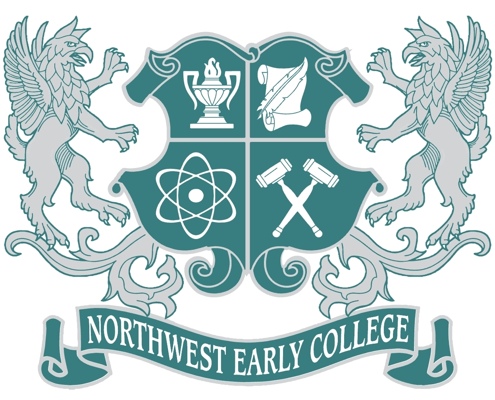

Education
Boston University at Boston, MA
Bachelor of Arts in Computational Science (Expected May 2028)

Northwest Early College High School and El Paso Community College at El Paso, TX
Associate of Arts in Multidisciplinary Studies (Recieved May 2024)